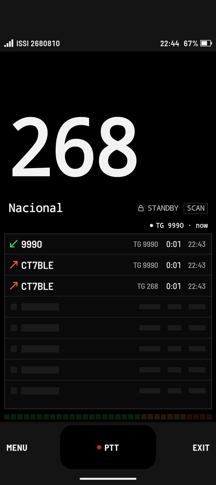
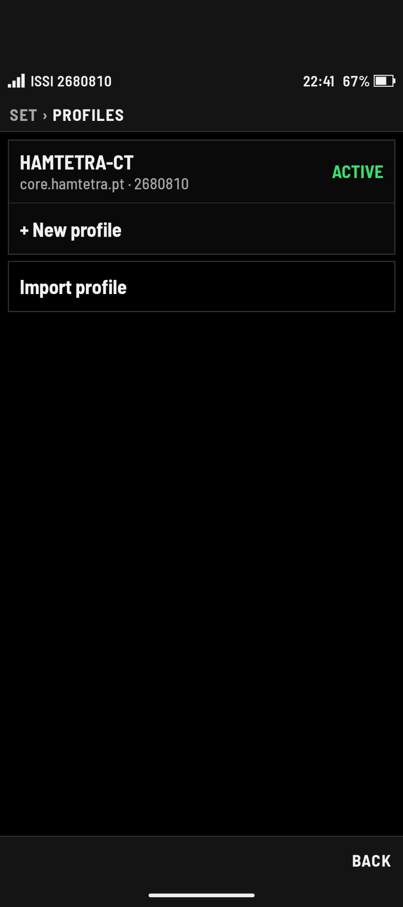
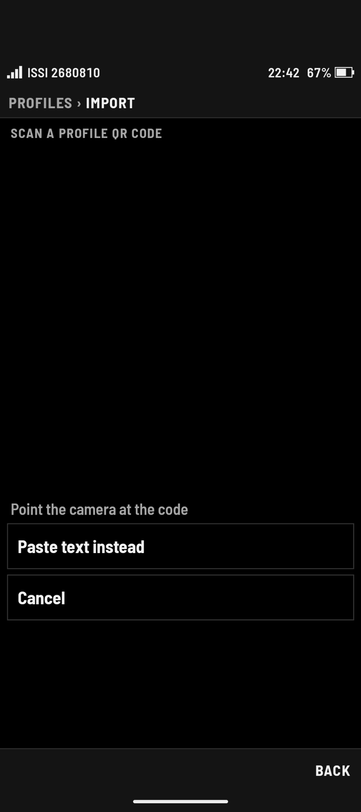

TETRA,
in your pocket.
Connect your field teams to existing TETRA talkgroups without needing dedicated RF hardware. voxTetra turns rugged PoC handsets and Android phones into responsive two-way radios over LTE, 5G, or Wi-Fi.
READY
The feel of real radio.
Wherever there's signal.
TETRA networks provide rock-solid critical comms, but coverage drops off at distance, inside reinforced buildings, or when team members travel off-site. voxTetra connects compatible Android devices and PoC radios straight to your TETRA talkgroups over standard cellular or Wi-Fi — with zero lag, physical PTT button support, and an interface that won't confuse anyone who has ever picked up a radio.
Take a closer lookBuilt for real PoC handsets
Tailored for dedicated hardware like the Hytera P50. The layout fits compact, sunlight-readable screens, handles gloved fingers easily, and talks directly to physical side PTT buttons.
Instant push-to-talk
No calls to answer and no dialing delays. Hit your mapped side key or the on-screen target and you're instantly transmitting to your talkgroup.
Clean talkgroup switching
Switch channels with a tap. You get clean channel names, visible GSSIs, and instant visual confirmation of who's keyed up on the air.
Zero-friction provisioning
Save multiple gateway and server setups as named profiles. Administrators can generate QR codes so field users can get on air in seconds without typing server addresses.
Built for quick glances.
Not menu hunting.
When you're working, you shouldn't have to fiddle with small buttons or dig through nested settings. voxTetra puts the active talkgroup and status right in front of you.

The main on-air screen
The view you'll spend all day in. Clear channel indicators, instant visual feedback when someone transmits, and a big touch target if you aren't using a physical key.
- High-contrast talkgroup name & ID
- Clear transmit and receive status lights
- Large touch PTT button for phone users
Organized talkgroups
Quickly switch between your operational channels. See your active talkgroup highlighted, check assigned GSSIs, and keep your teams separated.
- Full list of authorized talkgroups
- Instant channel switching with audio confirmation
- Searchable group list for busy networks
Multi-network profiles
Move between different TETRA gateways or operating sites without retyping connection parameters. Switch with a single tap or load new configs instantly.
- Stored gateway addresses and credentials
- Quick switching between networks
- QR import for zero-typing setup
Hardware keys & audio behavior
Map the PTT key to your device's dedicated side button or volume rocker. Customize call-grant tones, audio routing, and keep the app active in the background.
- Hardware PTT keycode mapping
- Toggle or press-to-talk modes
- Audio chimes, talk-permit tones, and background service
The connection is cellular.
The conversation is TETRA.
voxTetra streams low-latency digital voice over standard mobile data or Wi-Fi into the TETRA BREW IP Core. To everyone else on the talkgroup, you're just another unit on the channel.
Connection overview for reference. voxTetra connects to an authorized TETRA BREW IP Core integration.


Get on air in seconds.
No typing required.
Typing long server hostnames, port numbers, and authentication keys on a 2.4-inch radio screen is nobody's idea of fun. voxTetra lets administrators bundle gateway details and talkgroups into a single QR code. Scan it with the device camera, pick your talkgroup, and start talking.
Keep your crew connected,
wherever the job takes them.
The reliability and structure of TETRA, delivered across any cellular or Wi-Fi network.
Explore the app